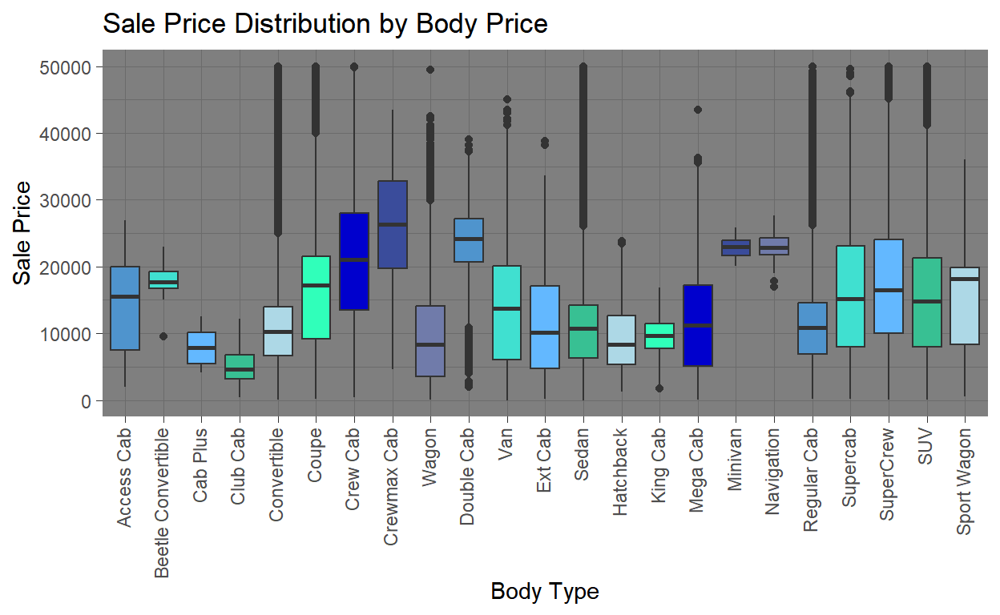
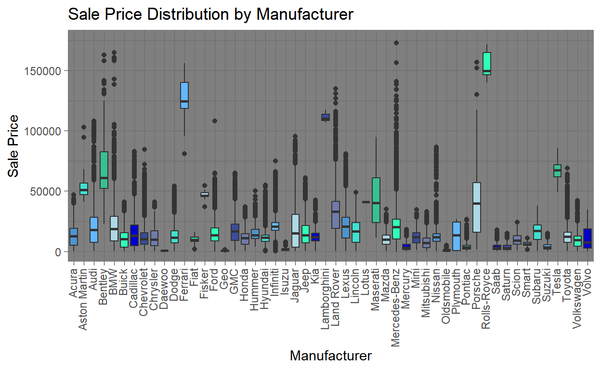
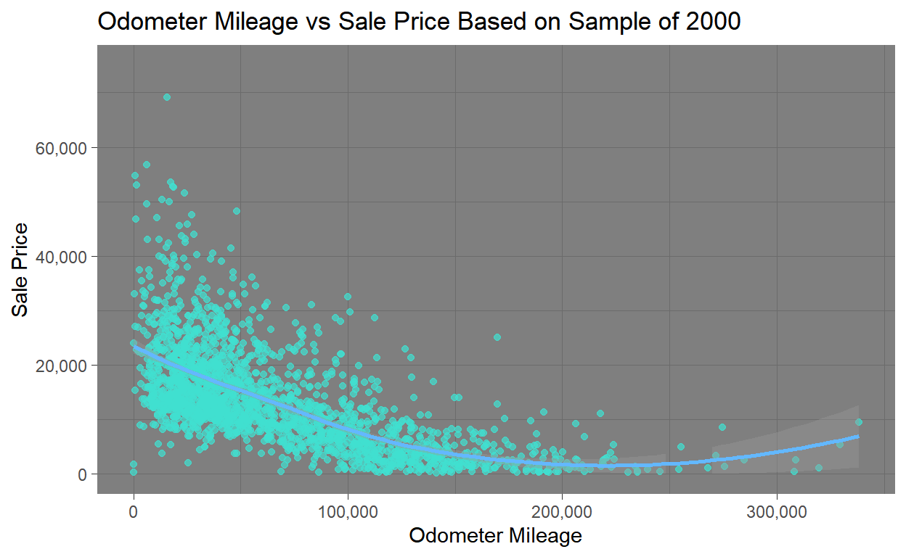
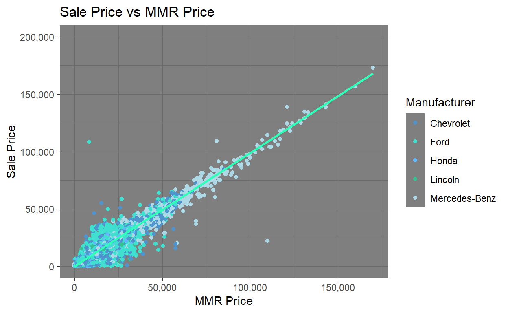
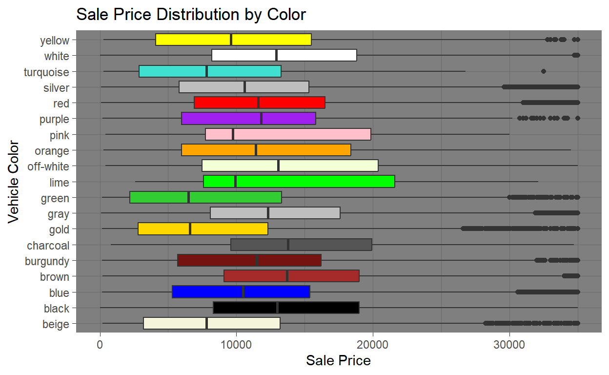
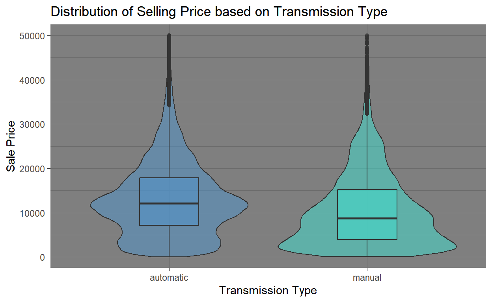
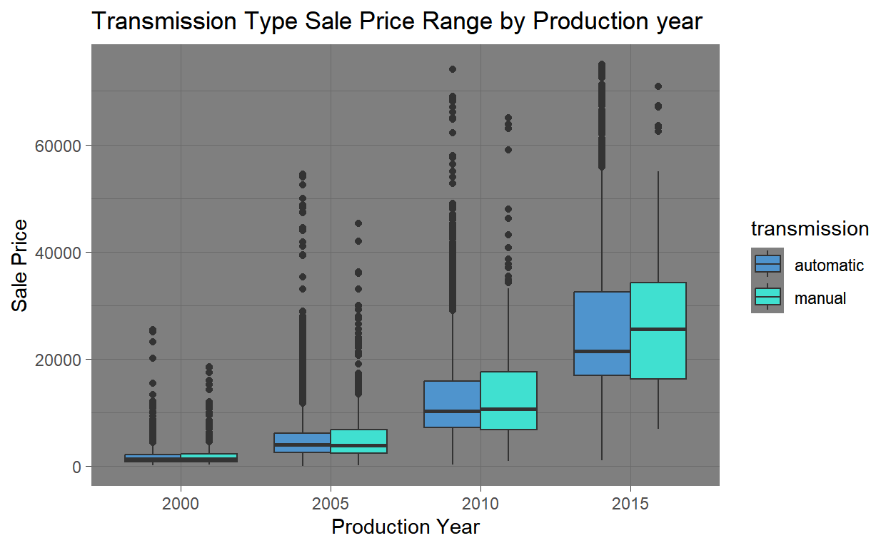
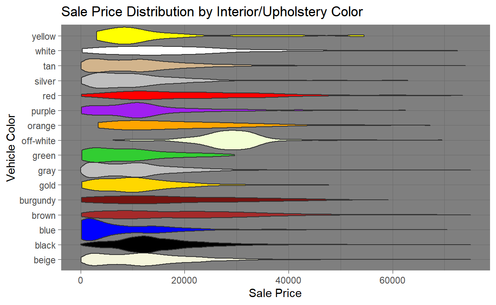
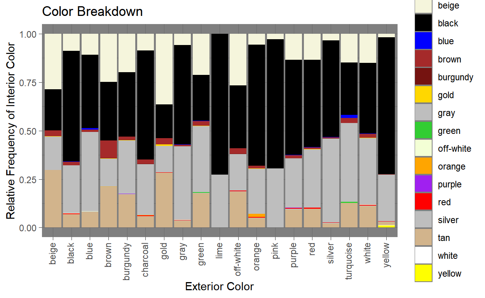

An exploration of both new and used car sales in the United States
When purchasing, or planning to purchase a new vehicle, it can be very important to understand what price you can expect based on what you want. This guide will explain how the price of cars is affected by a number of potential variables, including:
To start, let’s address a few intuitive facts about car buying that basically explain themselves and don’t require extensive explanation:
This guide uses data from 2014-2015 about dealership sales of both new and old cars in North America. While the below visualizations may not accurately represent modern prices, the relationships shown remain largely consistent.
With that out of the way, below are some visualizations explaining how price is affected by a number of different variables. Some explanation is given for each, but it’s a good idea to consider what you are looking for and what you are able to pay for, comparing those to each graph shown.
When purchasing a vehicle, one of the first things you should think about is the type of car you want. Sedan? Hatchback? Truck? If a truck, what kind of cab? The visualization below shows the price distribution of each body type. Note that there are many outlier points above the y-axis upper bound shown.

While you may have your heart set on a certain manufacturer, keep in mind that price distribution varies significantly from one to another, and some manufacturers are generally considered more expensive than others. The graph below provides an understanding of the price distribution available for essentially all the top car manufacturers.

The below graph shows the relationship between how many miles the car has traveled in it’s lifetime and its sale price. The sample was derived from a collection of used and new cars.

The MMR is a price index used to estimate the value of a car based on several factors. Generally, cars are sold for around their suggested price, although there can be deviation for several factors, including manufacturer. For the sake of examination, this graph includes the manufacturer of each car to show their deviation.

While not always that important, some car colors tend to be consistently more expensive than others. This visualizations shows the sale price distributions of cars based on their color.

When purchasing a vehicle it is important to know whether you want an automatic or manual, especially considering your driving ability. The distributions below show what you can expect from prices from each.

Notice how median price for a manual is a bit lower? This is likely due to an greater number of the manuals being sold and being older, due to their share of vehicle production decreasing over the years. Below is a second visualization showing this trend in more detail across different production years.

Interior color and upholstery can have a significant effect on price. The visualization below shows price distribution based on interior color.

Ever wondered if you’ll be able to find the interior color you want with the exterior color you want? The graph below shows the proportional breakdown of each exterior color. This way you can examine the likelihood you’ll be able to find a car you want.

The plot below allows you to compare exact cars to each other to get an idea for how different factors play into a vehicle’s final price.
NOTE: I tried to make the guides go away on this one and couldn’t get it to work. Also the manual color scale didn’t line up properly when I used my accurate color scale from earlier for some reason.